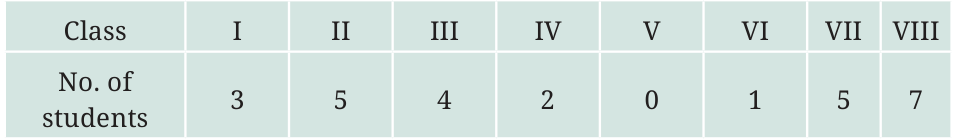
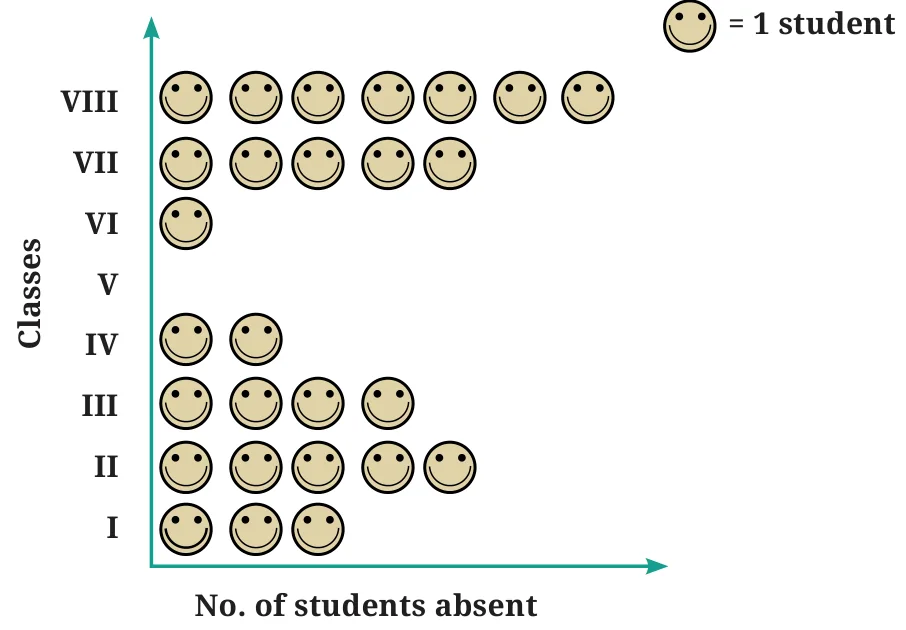
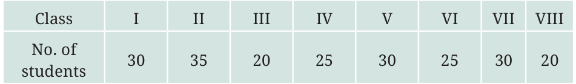
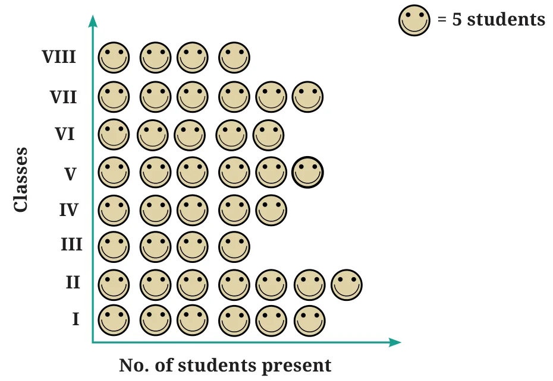
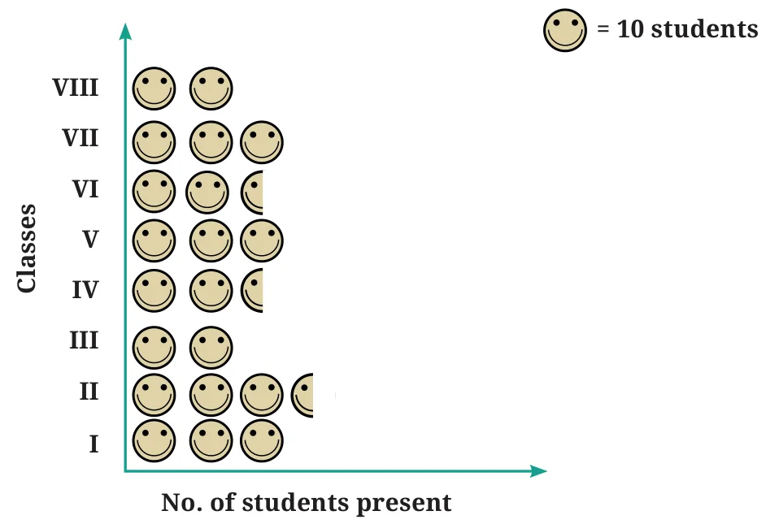
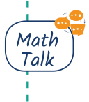

One day, Lakhanpal collected data on how many students were absent in each class:

He created a pictograph to present this data and decided to show 1 student as ☺ in the pictograph—

Meanwhile, his friends Jarina and Sangita collected data on how many students were present in each class:

If they want to show their data through a pictograph, where they also use one symbol ☺ for each student, as Lakhanpal did, what are the challenges they might face?
Jarina made a plan to address this—since there were many students, she decided to use ☺ to represent 5 students. She figured that would save time and space too.

Sangita decided to use one ☺ to represent 10 students instead.
Since she used one ☺ to show 10 students, she had a problem in showing 25 students and 35 students in the pictograph. Then, she realised she could use to show 5 students.

What could be the problems faced in preparing such a pictograph, if the total number of students present in a class is 33 or 27?

- Pictographs are a nice visual and suggestive way to represent data. They represent data through pictures of objects.
- Pictographs can help answer questions and make inferences about data with just a quick glance (in the examples above—about favourite games, favourite colours, most common modes of conveyance, number of students absent, etc.).
- By reading a pictograph, we can quickly understand the frequencies of the different categories (for example, cricket, hockey, etc.) and the comparisons of these frequencies.
- In a pictograph, the categories can be arranged horizontlly or vertically. For each category, simple pictures and symbols are then drawn in the designated columns or rows according to the frequency of that category.
- A scale or key (for example, ☺ : 1 student or ☺ : 5 students) is added to show what each symbol or picture represents. Each symbol or picture can represent one unit or multiple units.
- It can be more challenging to prepare a pictograph when the amount of data is large or when the frequencies are not exact multiples of the scale or key.